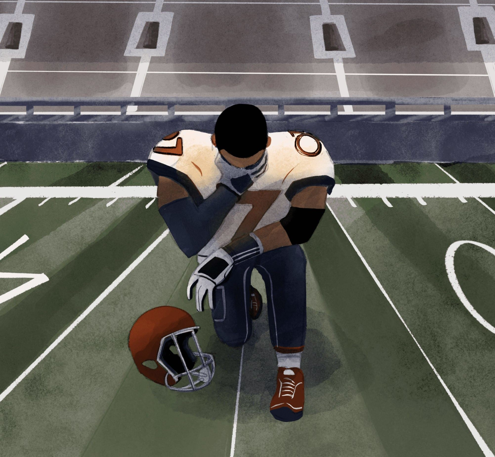
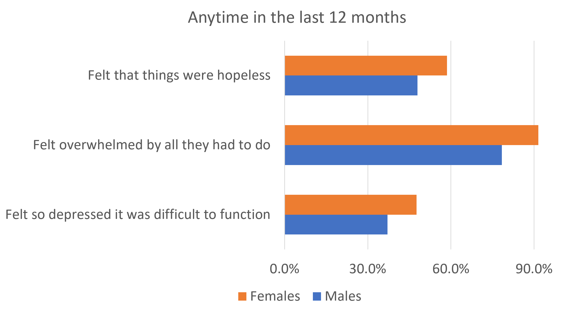

James White
Mental Health On Student Athletes
As a follow-up to two NCAA student-athlete well-being studies conducted in 2020, student-athletes continue to report elevated levels of mental health concerns. This is caused through athlets having so many things going on outside of sports and school and even in the sport itself they are pushed to hard and over worked.
- 
Facts About Mental Health Athletes
Student-athletes (22.3%) were at risk for depression, anxiety (12.5%), and low self-esteem (8%). No significant differences were found for sex, academic status, and sport type for depression or self-esteem; however, significant differences occurred for state and trait anxiety by sex. A significant association for depression and anxiety risk was found with females at risk. Depression and anxiety are present within student-athletes, regardless of sport type. Females are at a higher risk; however, all student-athletes would benefit from the creation of validated, patient-centered mental health screenings and psychotherapeutic interventions.